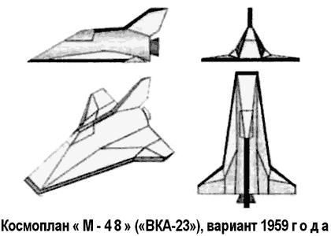
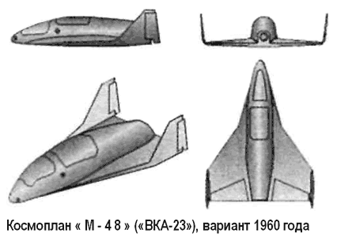

Воздушно-космические аппараты Мясищева
С поручением оценить перспективы создания воздушно-космического аппарата, способного обеспечить планирующий спуск, Сергей Королев обратился не только к Цыбину, но и к Владимиру Мясищеву.
С 1958 года в ОКБ-23 начались работы по эскизному проектированию пилотируемой ракеты с круговой дальностью полета (так она обозначалась в официальных документах).
Этот аппарат, получивший название «М-46», представлял собой небольшой звездообразный одноместный исследовательский аппарат, отличавшийся весьма скромными массово-геометрическими характеристиками: длина — 3,5 метра, ширина фюзеляжа — 1 метр, стартовая масса — 1000 килограммов.
«М-46» должен был выводиться ракетой «Р-7» на высоту полета, не превышавшую 120–130 километров.
В рамках проекта «46» также прорабатывался воздушно-космический аппарат по схеме «фара», по форме очень напоминавший спускаемый аппарат появившегося позднее космического корабля «Союз».
Принципиальная разница между этим вариантом «М-46» и спускаемой капсулой «Союза» состоит в том, что заключительный этап снижения планировалось осуществлять с помощью авторотирующего винта вместо парашюта. В это же время подразделение конструктора Селякова предложило крылатый космический аппарат, использующий аэродинамическую подъемную силу при полете в атмосфере.
«Граненый» одноместный аппарат имел острую переднюю кромку, оснащенную легкосъемным оплавляемым теплозащитным покрытием.
В 1959 году Павел Цыбин, конструкторское бюро которого влилось в состав ОКБ Мясищева, предложил новый орбитальный корабль самолетной схемы и с несущим корпусом.
По всей видимости, с этого предложения начался проект космоплана «48» («М-48», «ВКА-23»).

Разработка конструкции изделия по проекту «48» во многом была облегчена тем, что в ОКБ-23 был уже накоплен опт изготовления и отработки теплонапряженной конструкции крылатой ракеты «М-40» («Буран»), корпус которой способен был выдерживать нагрузки при температурах до 350 °C. Расчеты по определению температуры пограничного слоя при аэродинамическом нагреве показали, что нижняя поверхность крыла при входе в атмосферу будет нагреваться до 1500 °C.
Исходя из этого и подбиралась теплозащита, разработкой которой занимался ВИАМ. С целью снижения веса воздушно-космического аппарата была выбрана теплозащита из пенокерамики, отличающейся однако большой хрупкостью. Для обеспечения ее целостности нужно было иметь жесткую поверхность крыла, чтобы при деформации не разрушить покрытие.
Конструктивно пенокерамику включили в контур крыла в виде плат, как это было выполнено позднее на американском челноке «Спейс Шаттл» и на советском космическом корабле «Буран», и устанавливалась на клею с прослойкой.
Космоплан «М-48» создавался в сотрудничестве с ОКБ-1 и НИИ-1, которые возглавляли соответственно Сергей Королев и Мстислав Келдыш, поэтому в конструкции аппарата использовались узлы и оборудование, создаваемые в рамках программы «Восток».
Всего было предложено два основных варианта «М-48».
Более ранний вариант, датируемый 1959 годом, имел следующие габариты: полная длина — 9,4 метра, максимальный диаметр — 3,9 метра, размах крыла — 7,5 метра, полная масса — 3500 килограммов, масса топлива — 120 килограммов.
Более поздний вариант, датируемый 1960 годом: полная длина — 9 метров, максимальный диаметр — 2 метра, размах крыла — 6,5 метра, полная масса — 4500 килограммов, масса топлива — 600 килограммов.

Оба варианта были пилотируемыми, управление и габариты кабины рассчитывались на одного космонавта. Ракетный двигатель космоплана должен был работать на водороде или фторе в качестве горючего и на кислороде — в качестве окислителя.
«М-48» предназначался для вывода на орбиту высотой до 500 километров полезной нагрузки до 700 килограммов.
Единственным носителем, способным в то время осуществить задуманное, была ракета «Р-7». На любом участке полета пилот мог покинуть космоплан: на высотах до 11 километров он мог катапультироваться вместе с креслом, на больших высотах спасательным средством служил сам космоплан, по аварийному сигналу отделяющийся от носителя.
При возвращении на Землю управляемый спуск планировалось начинать с высоты 40 километров, имея возможность бокового маневра до 100 километров, а дальность планирования доходила до 200 километров. Приземление осуществлялось при вертикальной скорости 10–12 м/с на посадочную лыжу.
Проект «М-48» так и не был доведен до этапа постройки прототипа. Осенью 1960 Мясищева отправили руководить ЦАГИ, а ОКБ-23 стало филиалом № 1 ОКБ-52 Владимира Челомея.